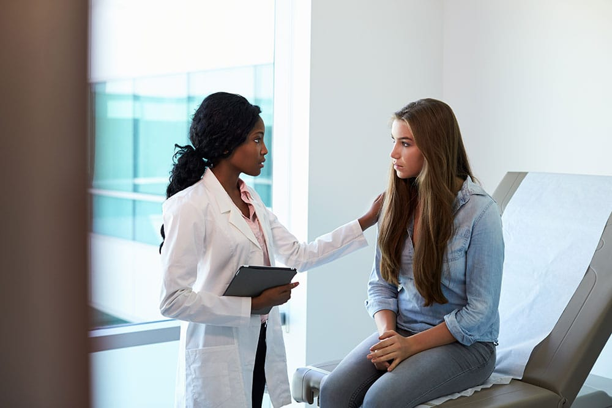
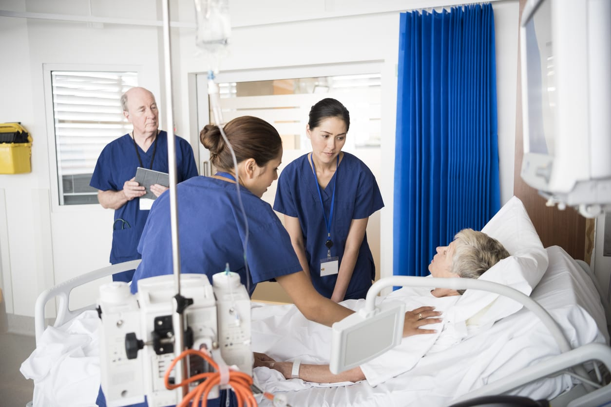

our facilities
there are various kind of facilities in new hope care hospital
cafeteria
A hospital cafeteria serves as a crucial facility, providing nutritious and convenient food options for patients, visitors, and staff. Typically located within the hospital or nearby, it offers a range of meals and snacks including breakfast, lunch, and dinner. The cafeteria aims to accommodate diverse dietary needs and preferences, ensuring that everyone has access to healthy and balanced food. With a focus on cleanliness and safety, the cafeteria plays a key role in enhancing the overall hospital experience by offering a welcoming space for nourishment and relaxation.
Laboratory Services
Laboratory services in hospitals play a critical role in patient care by providing essential diagnostic information. These services perform a range of tests, including blood work, urine analysis, and tissue biopsies, to diagnose medical conditions, monitor disease progression, and evaluate treatment efficacy. By analyzing samples in areas such as clinical chemistry, hematology, microbiology, and pathology, laboratory professionals deliver timely and accurate results that guide doctors in making informed decisions about patient care and treatment plans. Their work is fundamental in ensuring effective and personalized medical interventions.
Pharmacy
In hospitals, the pharmacy is integral to patient care, managing the procurement, preparation, and dispensing of medications. Hospital pharmacists work closely with medical teams to ensure that patients receive the correct medications, dosages, and administration routes. They also provide vital information on drug interactions, side effects, and appropriate usage, contributing to safe and effective treatment plans. By monitoring patient responses to medications and adjusting therapies as needed, hospital pharmacies play a crucial role in enhancing patient outcomes and ensuring the overall quality of care.

our services
there are various kind of services in new hope care hospital
emergency services
Emergency services in hospitals are vital for providing immediate medical care to patients experiencing acute health crises. These services include emergency departments (EDs) staffed by skilled doctors, nurses, and support personnel who are equipped to handle a wide range of urgent conditions, from severe injuries and heart attacks to strokes and complex traumas. The fast-paced environment of the ED requires rapid assessment, intervention, and treatment to stabilize patients and initiate further care. By offering round-the-clock availability and advanced medical technology, hospital emergency services are essential for addressing critical health issues and ensuring that individuals receive timely and effective care in life-threatening situations.
mental health care
Mental health care services in hospitals are essential for addressing a range of psychological and emotional challenges, providing specialized support for individuals experiencing crises such as severe anxiety, depression, or psychosis. These services include dedicated psychiatric units and crisis intervention teams staffed by mental health professionals, such as psychiatrists, psychologists, and counselors. They offer comprehensive assessments, therapy, and medication management to help stabilize patients and develop effective treatment plans. By integrating mental health care with general medical services, hospitals ensure a holistic approach to patient well-being, addressing both physical and psychological needs for improved overall health outcomes.
OPD services
Outpatient Department (OPD) services in hospitals provide essential care for patients who do not require overnight admission. OPD offers a range of medical services, including consultations, diagnostics, and minor treatments, allowing patients to receive care and return home the same day. These services typically include routine check-ups, specialist consultations, and follow-up visits for chronic conditions. By offering convenient and accessible care, OPD services help manage health issues effectively while reducing the need for more intensive inpatient care.
our team
there are highly skilled doctors,nursers and very friendly supportive staff
skilled doctors
Skilled doctors are the backbone of effective healthcare, combining deep medical knowledge with exceptional clinical skills to diagnose, treat, and prevent a wide array of illnesses. Their expertise is not just rooted in their understanding of medicine but also in their ability to listen empathetically, communicate clearly, and make critical decisions under pressure. These professionals often dedicate years to rigorous training and continuous learning to stay at the forefront of medical advancements, ultimately ensuring that their patients receive the highest standard of care. Their commitment to excellence not only heals but also inspires trust and confidence in the healthcare system.
experienced nurses
Experienced nurses bring a wealth of practical knowledge and skills to their roles, developed through years of hands-on practice and patient care. They excel in clinical expertise, decision-making, and problem-solving, often handling complex medical situations with confidence and efficiency. Their experience fosters strong patient relationships, compassionate communication, and mentorship abilities, allowing them to guide and support less experienced staff. Overall, experienced nurses are pivotal in ensuring high-quality patient care and contributing to the smooth operation of healthcare environments.
supportive staff
Supportive staff in a hospital play a crucial role in creating a positive and efficient healthcare environment. They include roles such as medical assistants, administrative personnel, and support services teams who work collaboratively to ensure that patient care runs smoothly. Their responsibilities range from managing patient records and coordinating appointments to providing essential services like housekeeping and maintenance